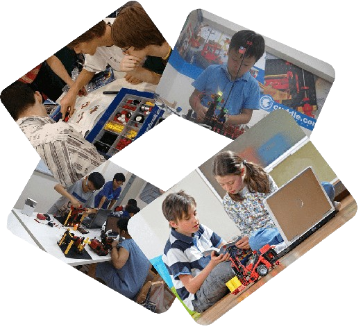
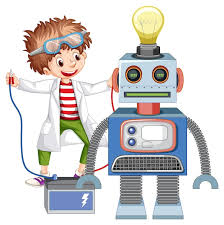

| Cursos Extracurriculares que ofrece nuestra institución |
|
¡Bienvenidos a Nuestros Cursos Extracurriculares! En nuestro Colegio Tecnico Albert Einsten, creemos en el poder del aprendizaje continuo y la exploración. Nuestros cursos están diseñados para inspirar, educar y empoderar a cada uno de nuestros estudiantes. Ya sea que estés buscando desarrollar habilidades artísticas, mejorar tus finanzas familiares o sumergirte en el fascinante mundo de la robótica, aquí encontrarás la oportunidad perfecta para expandir tus horizontes. Descubre todo lo que podemos ofrecerte y sé parte de nuestra comunidad de aprendizaje. ¡Tu próximo desafío comienza aquí! ¡Bienvenidos a un futuro lleno de posibilidades! |
 |
|  | ||
| Curso de Robotica para niños | Curso de Finanzas familiares | Curso de Dibujo |
|
¡Explora el mundo de la robótica! 🤖 Únete a nuestro emocionante Curso de Robótica en Nuestra institucion. Diseña, construye y programa tus propios robots mientras aprendes habilidades STEM esenciales. ¡Ideal para jóvenes innovadores! 🗓️ Duración: 12 semanas 🕒 Horario: Sábados, 10:00 AM - 1:00 PM 📍 Lugar: Laboratorio de Tecnología ¡Inscríbete hoy! y da vida a tus ideas robóticas 🚀🔧 |
¡Mejora tus finanzas familiares! 💰 Te invitamos a nuestro práctico Curso de Finanzas Familiares en nuestra institucion. Aprende a gestionar tu presupuesto, ahorrar inteligentemente e invertir para el futuro. ¡Ideal para todas las familias! 🗓️ Duración: 8 semanas 🕒 Horario: Lunes y miércoles, 6:00 PM - 8:00 PM 📍 Lugar: Aula de Economía ¡Inscríbete hoy! y toma el control de tus finanzas familiares 📊✨ |
¡Descubre tu talento artístico! 🌟 Te invitamos a nuestro exclusivo Curso de Dibujo en nuestra institucion. Aprende técnicas profesionales, desarrolla tu creatividad y comparte con otros apasionados del arte. ¡No necesitas experiencia previa! 🗓️ Duración: 10 semanas 🕒 Horario: Martes y jueves, 4:00 PM - 6:00 PM 📍 Lugar: Aula de Arte. ¡Inscríbete hoy! y comienza tu viaje artístico con nosotros. 🎨✨ |
| Actividades Academicas |
| Club de Futbol | Curso de Ciencias |
|
¡Únete al Club de Fútbol de El Colegio Tecnico Albert Einsten y vive la pasión por el deporte rey! Aquí, no solo mejoramos nuestras habilidades futbolísticas, sino que también fomentamos el trabajo en equipo, la disciplina y la amistad. Nuestros entrenadores capacitados te guiarán para que alcances tu máximo potencial en un ambiente divertido y competitivo. 🕒 Horario de Entrenamiento: Mart y Juv 4:00 PM 🏟️ Lugar: Campo de Fútbol ¡No te pierdas la oportunidad de formar parte de nuestro equipo y vivir experiencias inolvidables en cada partido! |
Bienvenidos al apasionante mundo del Club de Ciencias de El Colegio Tecnico Albert Einsten Aquí, exploramos, experimentamos y descubrimos el fascinante universo de la ciencia. Desde biología hasta física, nuestro club ofrece actividades emocionantes que estimulan la curiosidad y promueven el pensamiento crítico entre nuestros miembros. 🔬 Actividades: Experimentos prácticos, investigaciones científicas, excursiones educativas 🕒 Horario de Reuniones: Viernes, 3:00 PM - 5:00 PM 📍 Lugar: Laboratorio de Ciencias ¡Únete a nosotros y sé parte de una comunidad donde la innovación y el conocimiento van de la mano! |